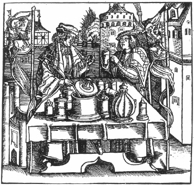

ŞEKİL 58. Tiryakın hazırlanması ve izleyiciler önünde sınanması
(ahşap oyma resim; H. Brunschwig, Destillierbuch..., Strasbourg, 1531).50
Yazarının Johannes von Cuba olduğu söylenen ve ilk baskısı Peter Schöffer tarafından 1485’te Strasbourg’da yapılan Der Gart der Gesundheit (Sağlık Bahçesi) adlı eser, 15. yüzyılın tüm tıbbî bilgilerini içermekte ve pek çok kaynaktan yapılmış bir derleme olduğu düşünülmektedir. Yunanca ya da Latince değil de halk dili Almancası (güç anlaşılır Bavyera lehçesi) ile yazılmış olup Avrupa’nın ilk şifalı bitkiler kitabıdır. 65 tanesi bu eser için oldukça başarıyla ve özel olarak yorumlanmış bitki türlerine ilişkin olan ve diğerleri de daha eski kaynaklardan kopyalanan, 379 adet ahşap oyma resim içermektedir. İçinde bitkiler, mineraller, hayvanlar, üroskopi gibi konulara yönelik bölümler vardır. Eserde, bitümlü kömür maddesinde şu bilgiler verilmektedir: “Enax adlı bir üstad, Taşlar Kitabı’nda, onun, bakirelerden tüm cinleri ve melankoliyi uzaklaştırma gücüne sahip değerli bir taş olduğunu söylemektedir”.49
William Turner (ölm. 1568), Thesaurus pauperum (Yoksulların Hazinesi) adlı şifalı bitkiler kitabında, ne Eski Yunanlıların ne de Romalıların dile getirmedikleri bitkileri de ekleyerek, İngiltere’ye özgü 200’ün üzerinde doğal bitki türünü betimlemiştir.
ŞEKİL 59’da, Pierre Pomet’nin farmakognozi elkitabından resimler yer almaktadır. Paris’li ev ilaçları tüccarı Pierre Pomet, 1694 yılında, resimli ilk farmakognozi elkitabını yayımlamıştır ve bu kitap, tarihçiler için çok değerli bir kaynaktır. Buradaki resimler, eserin 1717 yılında Der aufrichtige Materialist und Specerey-Händler (Dürüst Malzeme ve Baharat Tüccarı) adı altında Leipzig’de yayımlanan Almanca nüshasından alınma olup “Mekke pelesengi” ile misk kedisini konu edinmektedir. Pierre Pomet’nin sözü edilen eserinin kütüphanelerdeki nüshaları incelendiğinde, nüshalardaki aşırı yıpranmalardan, bu esere yoğun olarak başvurulduğu anlaşılabilmektedir. “Mekke pelesengi” ya da “Yahudi balsamı”, “Balsamodendron opobalsamum“ ağaççıklarının salgısı olup dallarının kaynatılmasıyla şurup türü sıvı halinde bir reçine olarak elde edilirdi. Başka bir ünlü balsam, Kızıldeniz’in her iki yanındaki ülkelerde yayılım gösteren “Gilead balsamı” (“Populus gileadensis”) idi. Dağlık bir yöre olan Gilead, Şeria’nın doğusundaki eski Filistin topraklarının adıdır. Doğu’da terletici ve yara iyileştirici olarak çok değer verilen bir ilaç idi (“Gilead merhemi”). Bu balsamlar pahalı olduğundan, bu ağaççıkların yetiştirildiği bahçelerin Yeniçeriler tarafından koruma altına alındığı düşünülmektedir (resimde silahlı bir Yeniçeri ve içine peleseng toplanan şişeler görülmektedir). Bu balsam hanedan kadınlarının kozmetiği olarak kullanılıyordu. Gilead balsamının Saba Melikesi Belkıs tarafından Kral Süleyman’a armağan olarak sunulduğu söylenir. İncil’de, ayrıca Theophrastos, Galenos ve Dioskorides’in eserlerinde de ondan söz edilmiştir. Roma çağında ünlü yazar Yaşlı Plinius, onun çok pahalı bir madde olduğunu ve ağaççıklarının ilk olarak Vespasianus’un generalleri tarafından Roma’ya getirildiğini belirtmiştir.149 Romalı tıp derleyicisi Celsus, “Balsamodendron opobalsamum“u yaraların temizlenmesinde yara soyucu, iltihap kurutucu ve yumuşatıcı olarak; yara üzerine konan lapaların içeriğinde; nevralji tedavisinde ağrı kesici olarak; bir göz merheminde ve idrar söktürücü olarak kullanımını önermiştir. Balsam, Eskiçağ’ın en ünlü antidotu olan “mithridatum”un, Celsus’un ilettiği şeklinin 37 bileşeninden biriydi. Böyle pahalı balsam ve kokulu yağlar vaftizde, bedeni ve kutsal emanetleri yağlamada, kutsal mekânları kokulandırmada ve dinsel mekânlardaki kandillerde de kullanılmaktaydı.50 Afrika’da, özellikle de Habeşistan’da, Mısır’da, Sudan’da yaşayan zibet ya da misk kedisinin (“Viverra civetta” ya da “Zibethum”) cinsel ilişkiye girmek istediğinde salgıladığı bir salgı olan ve hayvanın anüsünden merhem benzeri katı bir atık olarak toplanan civet, zibet ya da Tibet miski, C17H30O bileşimli güzel koku maddesi olup Arapça’da köpük anlamına gelen “zebâd” sözcüğünden gelir. İngilizce’de “civet”, Almanca’da “Zibet”, Fransızca’da ise “civette” şeklinde geçer. İlkin yalnızca Araplar tarafından kullanılmış ve ancak 16. yüzyılda Avrupa’ya sevk edilmiştir. Fransız eczacı Nicolas Lémery (1645-1715), onu baş ağrısına karşı ilaç olarak önermiş, o dönemlerin en popüler erkek parfümü olmuş ve dönemin İtalyan soyluları onu eldivenlerine sürerek kullanmışlardır. Dövülerek (çalkalanarak) elde edilen bu balsam bileşeni, afrodizyak olarak da kullanılmıştır. Doğu Asya’da tütünü kokulandırmak amber katkısı kullanılırken, 18. yüzyılda Paris’teki tütüncüler, tütüne civet katmışlardır.150 Zibet kedisi aynı zamanda, kahve çekirdeğini yedikten sonra dışkı olarak dünyanın en pahalı kahvesini üreten kedidir!